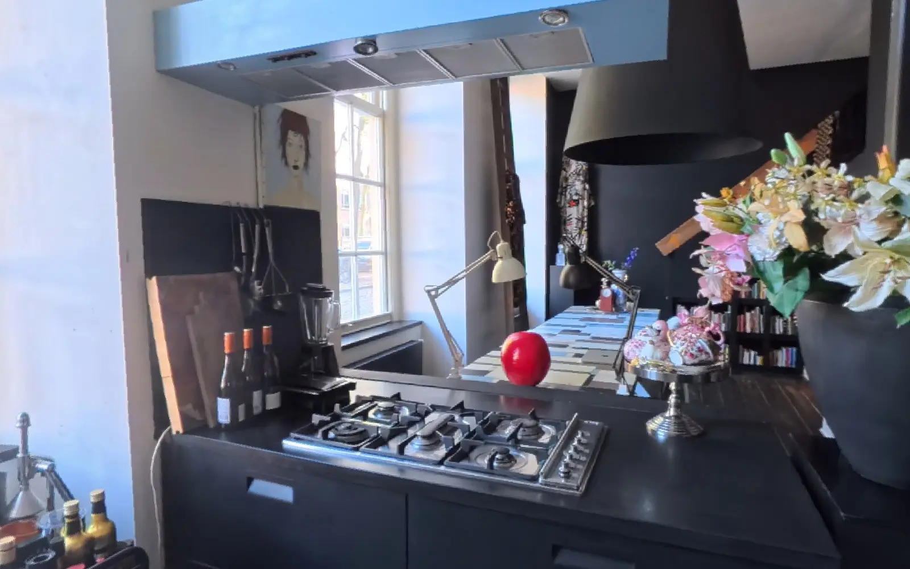

Step Into
Space.
Space.
Try it for yourself today.
We’re Orbit 3D
We turn your place into spaces you can explore and redesign.
One space. Turn it, zoom in, look around.
First feel like you’re there

Look around, or move through.
Now explore what it could become
Not your style?
Change it!
Change it!
Place it however you like it.
Stop 3 of 3
Lights on or off.
The space is limited to your creativity
Results?
Take a look
Take a look
Already designed?
Design in Orbit Move, swap and paint in the Design tools. Save to file One small file, kept on your device. Upload here Your house opens with your design on.
What happens next?
Capture We capture the place. Design We design the scan. Model We build the 3D model from the same scan. Publish You get one link. Delivered by us directly.